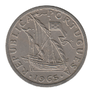

Two-and-a-Half Escudos
First Series
1932
1933
1942
1945
1946
1951
Second Series
1964
 1965
1966
1967
1968
1969
1970
1971
1972
1973
1974
1975
1976
1977
1977-INCM Alexandre Herculano
1978
1979
1980
1981
1982
1983
1984
1985 Small Date
1985 Large Date
Back to Republic of Portugal
Back to Portugal Main Page
Back to Home